| Sample ID | P0 | P1 | Original Image | P0 Image | P1 Image |
|---|---|---|---|---|---|
| 3282 | An 80s-sitcom style Two Shot of a demon and a man sitting on the brown corduroy sofa from <IMAGE_0>. The demon from <IMAGE_1>, a realistic CGI male humanoid demon with red skin and horns, sits on the screen-left side of the sofa facing frame-right, holding the dark black ceramic mug with a matte finish from prop_tea_mug in both hands, retaining his exact appearance and wardrobe from <IMAGE_1> including his black short-sleeve button-down shirt with small red flame patterns and dark denim pants. The tall brown-haired bearded man from <IMAGE_2>, representing Jesus Christ, lounges on the screen-right side of the sofa, looking frame-left towards the demon, with empty hands, retaining his exact appearance and wardrobe from <IMAGE_2> including his casual beige linen shirt with loose sleeves and faded blue jeans. The oak coffee table sits in the foreground in front of them, with the cream-colored west wall and wooden entrance door visible in the background. The lighting is flat multi-camera studio lighting, vintage television broadcast style, harsh and even lighting, no shadows. 80s broadcast television still, warm oversaturated color palette, chromatic aberration, analog film grain, visible horizontal scan lines, skin texture washed flat by overlit studio lighting, smooth video texture, no pore detail. | An 80s-sitcom style two-shot set in the living room from <IMAGE_0>. The scene features the same brown corduroy three-seater sofa, the wooden coffee table in the foreground, the cream-colored wall, and the wooden entrance door in the background. Sitting on the screen-left side of the sofa is the realistic CGI male humanoid demon from <IMAGE_1>, retaining his exact appearance and wardrobe, including his red skin, horns, black short-sleeve button-down shirt with small red flame patterns, and dark denim pants. The demon is facing frame-right and holding a dark black ceramic mug with a matte finish in both of his hands. Lounging on the screen-right side of the sofa is the tall, brown-haired, bearded man from <IMAGE_2>, representing Jesus Christ. He retains his exact appearance and wardrobe from <IMAGE_2>, including his sunglasses, casual beige duffle coat, beige linen shirt, and faded blue jeans. He is looking frame-left towards the demon with his hands empty. The entire image is rendered to look like an authentic 80s broadcast television still, featuring flat multi-camera studio lighting that is harsh and even, completely eliminating natural shadows. The aesthetic includes a warm, oversaturated color palette, chromatic aberration, analog film grain, visible horizontal scan lines, and a smooth video texture where skin details are washed flat by the overlit studio lighting. | 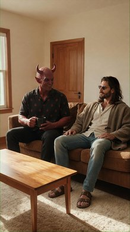 | 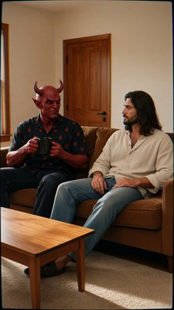 | 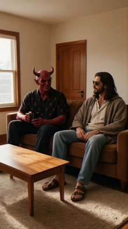 |
| 3281 | Front Medium Shot of the tall brown-haired bearded man from <IMAGE_1> standing in the center of the frame on the green asphalt court from <IMAGE_0>. The man appears exactly once in the frame, positioned in the midground, torso facing forward and looking directly at the camera with a determined, intense expression. He is holding the retro red wooden tennis racket with white nylon strings tightly in his hand. Sweat glitters on his forehead, and he retains his exact appearance and wardrobe from <IMAGE_1>, including his white athletic polo shirt, white tennis shorts, white sweatbands, and retro leather tennis sneakers. The white mesh tennis net from <IMAGE_0> is visible in the background, while the player benches are off-frame. The scene is illuminated by midday, harsh, blinding overhead sunlight under a clear sky, creating high-contrast shadows and visible heat shimmer. Change image style to an 80s broadcast television still. Flat multi-camera studio lighting, vintage television broadcast, harsh and even lighting, no shadows. Warm oversaturated color palette, chromatic aberration. Analog film grain, visible horizontal scan lines. Skin texture washed flat by overlit studio lighting, smooth video texture, no pore detail. | A front medium shot blending the subjects of <IMAGE_0> and <IMAGE_1>, styled as a vintage 1980s broadcast television still. The tall, brown-haired, bearded man from <IMAGE_1> stands centered in the midground on the green asphalt tennis court from <IMAGE_0>. He retains his exact wardrobe: dark aviator sunglasses, a white athletic polo shirt, white tennis shorts, white wrist sweatbands, and white sneakers with brown soles. He holds a retro red wooden tennis racket with white nylon strings tightly in his hand. He looks directly at the camera with a determined, intense expression, with sweat glittering on his forehead. The white mesh tennis net, chain-link fencing, and clear blue sky from <IMAGE_0> form the background. The visual style mimics an 80s TV broadcast with a warm, oversaturated color palette, chromatic aberration, analog film grain, and visible horizontal scan lines. The lighting is harsh, flat, and even overhead, characteristic of multi-camera studio setups, washing out skin textures to a smooth video finish with no pore detail, while still conveying the intense midday sun and heat shimmer of the court. | 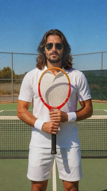 | 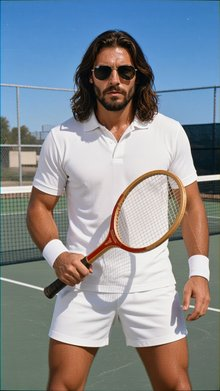 | 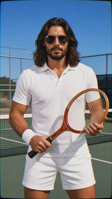 |
| 3280 | Two Shot of the demon from <IMAGE_1> and the brown-haired man from <IMAGE_2> sitting in the red booth from <IMAGE_0>. The demon from <IMAGE_1> sits screen-left in the curved red booth, torso turned slightly toward the table, staring hungrily down with wide eyes and a slight grin at the oval plate containing chicken parm, marinara sauce, and spaghetti placed on the dark mahogany table in front of him. He retains his exact appearance from <IMAGE_1>, including his red skin, horns, muscular build, and a black short-sleeve button-down shirt with small red flame patterns. The brown-haired man from <IMAGE_2> sits screen-right in the curved red booth, facing slightly left toward the demon, holding a fork in his hand near the food plate on the table. He retains his exact appearance from <IMAGE_2>, including his brown hair, beard, and casual beige linen shirt with loose sleeves. The scene is set inside the dim restaurant interior from <IMAGE_0> with the curved red leather booth, the mahogany table, and the dark wood-paneled wall with framed retro pictures in the background. The scene is illuminated by flat multi-camera studio lighting with a warm oversaturated color palette. 80s broadcast television still. Vintage television broadcast, flat studio lighting, no shadows. Warm oversaturated color palette, chromatic aberration, analog film grain, visible horizontal scan lines. Skin texture washed flat by overlit studio lighting, smooth video texture, no pore detail. | A vintage 1980s broadcast television still depicting a two-shot scene set inside the dimly lit restaurant interior from <IMAGE_0>. The background features the dark wood-paneled walls, the warm wall sconce, and the framed black-and-white retro pictures from <IMAGE_0>. In the center is the curved red leather booth and the dark mahogany table. Sitting on the screen-left side of the booth is the red-skinned demon from <IMAGE_1>, retaining his exact appearance, including his horns, muscular build, dark jeans, and black short-sleeve button-down shirt with small red flame patterns. His torso is turned slightly toward the table, and he is staring hungrily down with wide eyes and a slight grin at an oval plate containing chicken parmesan, rich marinara sauce, and spaghetti placed on the table in front of him. Sitting on the screen-right side of the booth is the brown-haired man from <IMAGE_2>, retaining his long hair, beard, sunglasses, blue jeans, and his beige hooded coat over a casual beige linen shirt with loose sleeves. He is facing slightly left toward the demon, holding a fork in his hand near the food plate. The entire scene is illuminated by flat multi-camera studio lighting with a warm, oversaturated color palette, completely devoid of deep shadows. The aesthetic heavily mimics a vintage television broadcast, featuring chromatic aberration, analog film grain, visible horizontal scan lines, and a smooth video texture where the skin details of both characters are washed flat by the overlit studio lighting, lacking any fine pore detail. | 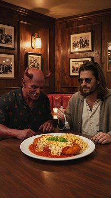 | 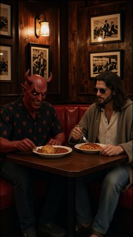 | 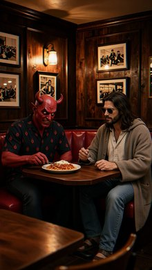 |
| 3279 | Two Shot of the tall brown-haired bearded man from <IMAGE_1> and the red-skinned horned demon from <IMAGE_2> sitting on the floor of the cozy retro apartment living room from <IMAGE_0>, building a Lego set. The tall brown-haired bearded man from <IMAGE_1> appears exactly once, sitting cross-legged on the floor on the frame-right side of the frame, holding a small grey brick over the half-constructed, multi-tiered white and grey plastic toy brick fortress from prop_lego_castle which is placed on the carpet in front of him. He is looking down at the toy, smiling, and retains his exact appearance and wardrobe from <IMAGE_1>, including his casual beige linen shirt with loose sleeves and faded blue jeans. The red-skinned horned demon from <IMAGE_2> appears exactly once, sitting on the floor on the frame-left side of the frame, looking down and scanning the instruction booklet from prop_lego_castle. He retains his exact appearance and wardrobe from <IMAGE_2>, including his muscular red-skinned build, horns, and his black short-sleeve button-down shirt with small red flame patterns. The midground shows the brown corduroy sofa and oak coffee table from <IMAGE_0>, with the cream-colored west wall and entrance door visible in the background. The style is an 80s broadcast television still. Flat multi-camera studio lighting, vintage television broadcast, harsh and even lighting, no shadows. Warm oversaturated color palette, chromatic aberration. Analog film grain, visible horizontal scan lines. Skin texture washed flat by overlit studio lighting, smooth video texture, no pore detail. | A two-shot scene set in the cozy apartment living room from <IMAGE_0>, featuring the tall, brown-haired, bearded man from <IMAGE_1> and the red-skinned, horned demon from <IMAGE_2> sitting together on the fluffy carpet, building a Lego set. The image is strictly rendered in the style of an 80s broadcast television still, characterized by flat multi-camera studio lighting, harsh and even illumination with absolutely no shadows, a warm oversaturated color palette, chromatic aberration, analog film grain, visible horizontal scan lines, and a smooth video texture where skin details are washed flat by overlit studio lighting with no pore detail. On the frame-right side, the man from <IMAGE_1> sits cross-legged on the floor. He retains his exact appearance and wardrobe, including his long brown hair, beard, sunglasses, loose beige linen shirt, faded blue jeans, and brown sandals. He is smiling warmly, looking down at the toy, and holding a small grey plastic brick over a half-constructed, multi-tiered white and grey plastic toy brick fortress placed on the carpet in front of him. On the frame-left side, the demon from <IMAGE_2> sits on the floor, retaining his exact muscular red-skinned build, prominent horns, sinister facial features, black short-sleeve button-down shirt with red flame patterns, dark jeans, and grey shoes. The demon is looking down, scanning a paper instruction booklet for the toy brick fortress. The midground clearly displays the brown corduroy sofa and oak coffee table from <IMAGE_0>, while the cream-colored west wall, window, and wooden entrance door remain visible in the background, all bathed in the flat, shadowless, vintage television aesthetic. | 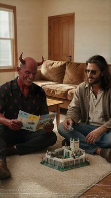 | 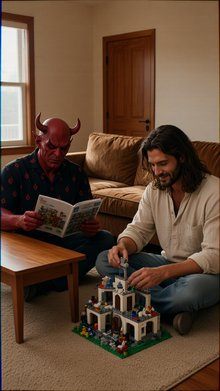 | 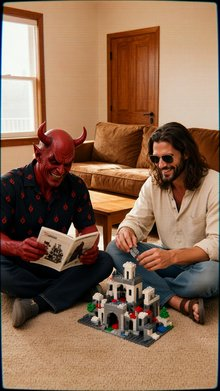 |
| 3278 | An 80s-sitcom style Two Shot of the red demon from <IMAGE_1> and the bearded man from <IMAGE_2> sitting at the bar from <IMAGE_0>. The red demon from <IMAGE_1> sits frame-left on a wooden stool, leaning his body and arm against the zinc bar surface from <IMAGE_0> with the raw oyster platter resting on the bar directly in front of him. The bearded man from <IMAGE_2> sits on the stool to his right (frame-right), with his body oriented slightly towards the red demon, smiling. The red demon retains his exact appearance and wardrobe from <IMAGE_1>, including his red skin, horns, muscular build, and a relaxed black short-sleeve button-down shirt with small red flame patterns. The bearded man retains his exact appearance and wardrobe from <IMAGE_2>, including his tall build, brown hair, beard, and casual beige linen shirt with loose sleeves. The scene takes place in the seafood restaurant from <IMAGE_0>, featuring the zinc bar and white brick wall in the background, with other patrons out of focus. Night, bright neon and warm pendant lights casting a vibrant, social glow over the patrons. Change image style to an 80s broadcast television still. Flat multi-camera studio lighting, vintage television broadcast, harsh and even lighting, no shadows. Warm oversaturated color palette, chromatic aberration. Analog film grain, visible horizontal scan lines. Skin texture washed flat by overlit studio lighting, smooth video texture, no pore detail. | An 80s broadcast television still featuring a two-shot of the red demon from <IMAGE_1> and the bearded man from <IMAGE_2> sitting side-by-side at the bar from <IMAGE_0>. The scene is set in the seafood restaurant environment from <IMAGE_0>, retaining the long metal zinc bar counter, the row of wooden bar stools, the white brick wall adorned with starfish and shell decorations, the warm hanging pendant lights, and the glowing neon signs in the background, including the blue 'PANCC BOARD' and red 'TUOR' signs. The background features out-of-focus patrons to create a vibrant, social night-time atmosphere. On the left side of the frame, the red demon from <IMAGE_1> sits on a wooden bar stool, retaining his exact appearance: red skin, horns, pointed ears, a sinister toothy grin, and his black short-sleeve button-down shirt with red flame patterns. He is leaning his muscular body and arm casually against the zinc bar surface. Resting on the bar directly in front of him is a large, detailed platter of raw oysters on ice with lemon wedges. To his right, on the adjacent stool, sits the bearded man from <IMAGE_2>. He retains his long brown hair, beard, and sunglasses, but is now wearing only the casual beige linen shirt with loose sleeves from his original outfit, having removed the brown coat. He is seated with his body oriented slightly towards the red demon, sporting a friendly smile. The entire image is heavily stylized to look like a vintage 1980s sitcom captured on a multi-camera studio setup. The lighting is flat, harsh, and even, completely eliminating shadows, with a warm, oversaturated color palette. The image features strong analog film grain, visible horizontal scan lines, and chromatic aberration. The characters' skin textures are washed flat by the overlit studio lighting, resulting in a smooth, low-resolution vintage video texture with no visible pore detail. | 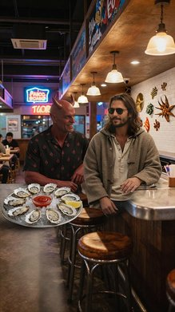 | 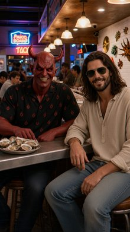 | 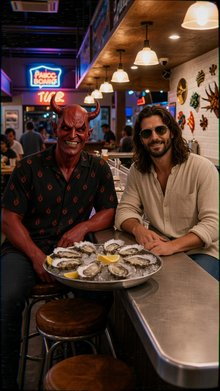 |
| 3277 | Cinematic Left Medium Shot of Jesus Christ and Satan in the concrete room from <IMAGE_0>. Jesus Christ from <IMAGE_1> stands in the midground, positioned frame-left and facing frame-right in profile. He has brown hair and a beard, and wears his beige linen robe with rolled-up sleeves over a tactical black bulletproof vest. A brown leather belt around his waist holds a heavy silver holster containing the chrome 80s service pistol. He stands calmly with his hands at his sides, looking towards frame-right. In the background at frame-right, Satan from <IMAGE_2> is visible, appearing as a red muscular horned demon wearing an unbuttoned dark red Hawaiian shirt over an off-white tank top and blue jeans. The rectangular steel table and concrete walls from <IMAGE_0> are visible. The scene is dimly lit at night, with a single bare lightbulb hanging from a wire directly above the steel table, casting a harsh, high-contrast cone of warm yellow light with deep shadows across the room. Shot on ARRI Alexa 65 with IMAX 70mm film quality, subject rendered with extreme crystal clarity, realistic fabric simulation, and clean, precise commercial color grade. | A cinematic left medium shot set within the dimly lit, textured concrete interrogation room from <IMAGE_0>. The scene retains the room's grungy concrete walls, floor, and the central rectangular steel table surrounded by metal folding chairs. The lighting is dramatic and moody, illuminated by the single bare lightbulb hanging from a wire directly above the table, casting a harsh, high-contrast cone of warm yellow light and deep, stark shadows across the space. In the midground, positioned on the left side of the frame and facing right in a profile view, stands the man from <IMAGE_1>. He retains his shoulder-length brown hair and beard, wearing the same beige linen robe with rolled-up sleeves over a tactical black bulletproof vest. A brown leather belt around his waist holds a heavy silver holster containing a chrome 80s service pistol, and he wears his brown leather boots. He stands calmly with his hands at his sides, looking intently towards the right. In the background on the right side of the frame stands the red, muscular horned demon from <IMAGE_2>. The demon retains his sinister grin, red skin, and horns, wearing the unbuttoned dark red floral Hawaiian shirt over an off-white tank top, blue jeans, and bare feet. The image is rendered with extreme crystal clarity, realistic fabric simulation, and a clean, precise commercial color grade, emulating the visual quality of an ARRI Alexa 65 with IMAX 70mm film. | 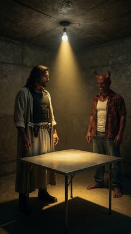 | 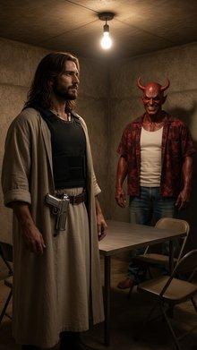 | 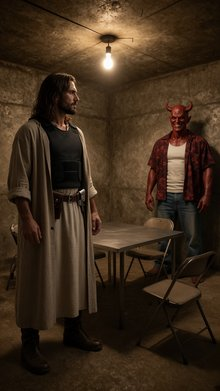 |
| 3276 | Cinematic-modern Left Medium Shot of the bearded man in a linen robe from <IMAGE_1> and the red muscular horned demon from <IMAGE_2> inside the dimly lit concrete room from <IMAGE_0> at night. The bearded man from <IMAGE_1> stands in the screen-left midground, his torso facing screen-right, with his hands resting calmly near his sides. He retains his exact appearance and wardrobe from <IMAGE_1>, including his tall build, brown hair, beard, beige linen robe with rolled-up sleeves, tactical black bulletproof vest, and a brown leather belt with a heavy silver holster. In the soft-focus background on the screen-right side, the red muscular horned demon from <IMAGE_2> is partially visible. The demon from <IMAGE_2> retains his exact appearance and wardrobe, including his red skin, horns, dark red Hawaiian floral shirt, and off-white tank top. The concrete walls of the room from <IMAGE_0> are visible in the background, but the steel table and chairs are mostly excluded from this medium shot. A single bare lightbulb hangs from a wire directly above, casting a harsh, high-contrast cone of warm yellow light that creates deep shadows on the characters and the walls. This is a film still, shot on ARRI Alexa 65 with IMAX 70mm film quality, featuring extreme crystal clarity, hyper-defined sharp details, realistic fabric simulation, and a massive dynamic range with a clean cinematic color grade. | A cinematic left medium shot set inside the dimly lit concrete room from <IMAGE_0> at night. The composition focuses on the screen-left midground, featuring the bearded man from <IMAGE_1> standing with his torso facing screen-right and his hands resting calmly near his sides. He retains his exact appearance and wardrobe from <IMAGE_1>, including his tall build, shoulder-length brown hair, beard, beige linen robe with rolled-up sleeves, tactical black bulletproof vest, and a brown leather belt with a heavy silver holster, along with his blue jeans and brown boots. In the soft-focus background on the screen-right side, the red muscular horned demon from <IMAGE_2> is partially visible. The demon retains his exact appearance and wardrobe from <IMAGE_2>, including his red skin, horns, sinister grin, dark red Hawaiian floral shirt, off-white tank top, blue jeans, and bare feet. The concrete walls of the room from <IMAGE_0> are visible in the background, but the steel table and chairs are mostly excluded from this medium shot. A single bare lightbulb hangs from a wire directly above, casting a harsh, high-contrast cone of warm yellow light that creates deep, dramatic shadows on the characters and the textured walls. This is a film still, shot on ARRI Alexa 65 with IMAX 70mm film quality, featuring extreme crystal clarity, hyper-defined sharp details, realistic fabric simulation, and a massive dynamic range with a clean cinematic color grade. | 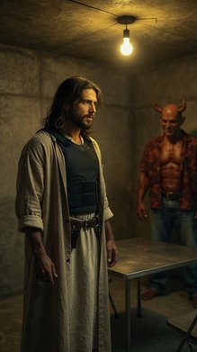 | 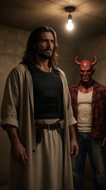 | 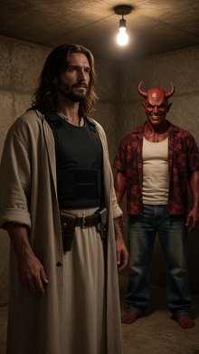 |
| 3275 | Front Medium Shot of the tall man with brown hair and a beard from <IMAGE_1> standing screen-left and the red muscular horned demon from <IMAGE_2> standing screen-right side-by-side in the midground, both looking forward toward the camera. Behind them is the empty steel table from <IMAGE_0>. Both characters appear exactly once in the frame. The tall man with brown hair and a beard from <IMAGE_1> stands on the left, looking directly at the camera with a calm expression, retaining his exact appearance, beard, and wardrobe from <IMAGE_1> including his beige linen robe with rolled-up sleeves and his tactical black bulletproof vest. The red muscular horned demon from <IMAGE_2> stands on the right, looking directly at the camera with a relaxed expression, retaining his exact appearance, horns, and wardrobe from <IMAGE_2> including his unbuttoned dark red Hawaiian floral shirt over an off-white cotton tank top and loose-fitting faded blue denim jeans. Behind them, the empty steel table and the concrete corner from <IMAGE_0> are visible, while the rest of the room is excluded from the frame. The scene is a dimly lit interior at night, with a single bare lightbulb hanging from a wire directly above the steel table, casting a harsh, high-contrast cone of warm yellow light with deep shadows across the room. The image style is a film still. Shot on ARRI Alexa 65 with IMAX 70mm film quality. Subject rendered with extreme crystal clarity, every detail hyper-defined and sharp. High-fidelity texture. Ultra-sharp focus on subject, high micro-detail rendering. Freckles/skin pores visible, accurate skin texture, realistic fabric simulation. Massive dynamic range capture, deep shadows and bright highlights. Cinematic color science. Clean precise commercial color grade. | A cinematic front medium shot set in the dimly lit, textured concrete corner of the room from <IMAGE_0>. In the midground, the empty square steel table from <IMAGE_0> is visible, illuminated by the single bare lightbulb hanging from a wire directly above it. Standing screen-left in front of the table is the tall man with long brown hair and a beard from <IMAGE_1>, retaining his exact appearance and wardrobe: a beige linen robe with rolled-up sleeves, a tactical black bulletproof vest, a brown leather belt with holsters, and brown boots. He looks directly at the camera with a calm expression. Standing screen-right beside him is the red, muscular horned demon from <IMAGE_2>, also retaining his exact appearance and clothing: an unbuttoned dark red Hawaiian floral shirt over an off-white cotton tank top, loose-fitting faded blue denim jeans, and bare red feet. The demon looks directly at the camera with a relaxed expression. The rest of the room and the chairs are excluded from the frame. The scene is styled as a film still shot on ARRI Alexa 65 with IMAX 70mm film quality, featuring a harsh, high-contrast cone of warm yellow light from the bulb casting deep shadows. The image boasts extreme crystal clarity, hyper-defined textures, visible skin pores, realistic fabric simulation, massive dynamic range, and a clean, precise commercial color grade. | 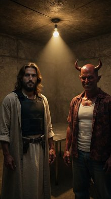 | 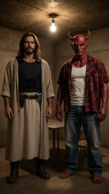 | 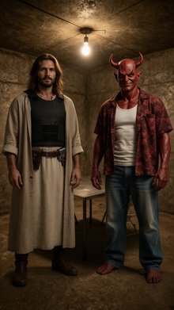 |
| 3274 | Front Medium Shot. Jesus Christ from <IMAGE_1> is standing screen-left in the midground of the concrete room from <IMAGE_0>, facing screen-right. He appears exactly once in the frame, torso and head profile oriented towards the right side of the frame with a calm, decisive expression. He retains his exact appearance and wardrobe from <IMAGE_1>, including his tall build, brown hair, beard, and beige linen robe with rolled-up sleeves worn over a tactical black bulletproof vest. The steel table from <IMAGE_0> is visible in the frame, while the far south wall and entrance door are excluded and not visible. A brilliant sapphire-blue light illuminates him from the side, contrasting with the warm, harsh, high-contrast cone of yellow light and deep shadows cast across the room by the single bare lightbulb hanging from a wire directly above the steel table. Shot on ARRI Alexa 65 with IMAX 70mm film quality, cinematic-modern style, extreme crystal clarity, hyper-defined sharp details, realistic skin and fabric texture. | A cinematic front medium shot set within the gritty, textured concrete room from <IMAGE_0>. The composition focuses on the steel table and chairs, deliberately excluding the far south wall and entrance door. Standing in the midground on the screen-left side is the man from <IMAGE_1>, retaining his exact appearance, tall build, long wavy brown hair, and beard. He is wearing the same outfit: a long beige linen robe with rolled-up sleeves, a black tactical bulletproof vest, a brown leather gun belt with holsters, and brown leather boots. He is positioned facing screen-right, with his torso and head in profile, displaying a calm, decisive expression. The room retains the warm, harsh, high-contrast cone of yellow light and deep shadows cast by the single bare lightbulb hanging directly above the steel table. Contrasting this, a brilliant sapphire-blue light illuminates the man from the left side, casting a vivid blue glow on his hair, face, and the left side of his robe. The image is rendered with extreme crystal clarity, hyper-defined sharp details, and realistic skin and fabric textures, emulating the visual quality of an ARRI Alexa 65 camera with IMAX 70mm film stock in a cinematic-modern style. | 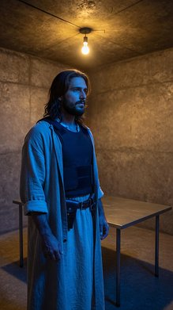 | 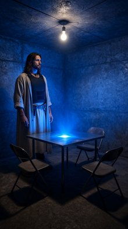 | 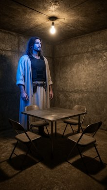 |
| 3273 | Front Wide Shot of the classic black muscle car from prop_muscle_car parked on the concrete dock. The bearded man in a white tunic from <IMAGE_1> and the red horned demon from <IMAGE_2> are visible through the windshield inside the dark cabin, sitting in the front seats. Each character appears exactly once in the frame. The bearded man from <IMAGE_1> is in the driver's seat looking forward through the windshield, retaining his exact appearance and wardrobe from <IMAGE_1>, including his tall build, long dark hair, and beard. The red horned demon from <IMAGE_2> is in the passenger seat, looking forward, retaining his exact appearance and wardrobe from <IMAGE_2>, including his red skin, horns, and bright red Hawaiian shirt with black palm tree prints. The wide concrete harbor dock from <IMAGE_0> is visible, with rusted shipping containers on the screen-left and the tall steel crane in the background. Dusk, with a deep orange sunset sky, casting long, dark shadows across the concrete floor. Change the image style to a film still. Shot on ARRI Alexa 65 with IMAX 70mm film quality. Subject rendered with extreme crystal clarity, every detail hyper-defined and sharp. High-fidelity texture. Ultra-sharp focus on subject, high micro-detail rendering. Freckles/skin pores visible, accurate skin texture, realistic fabric simulation. Massive dynamic range capture, deep shadows and bright highlights. Cinematic color science. Clean precise commercial color grade. | A cinematic, front wide shot of a classic glossy black muscle car parked centrally on the wide concrete harbor dock from <IMAGE_0>. The scene is set at dusk, retaining the deep orange sunset sky, the rusted shipping containers stacked on the left, and the tall steel crane silhouetted in the background from <IMAGE_0>. The warm sunset light casts long, dark shadows across the concrete floor and reflects off the car's polished exterior. Inside the dark cabin of the muscle car, clearly visible through the front windshield, are two figures sitting in the front seats. In the driver's seat on the left is the bearded man from <IMAGE_1>, looking directly forward through the glass. He retains his exact appearance and wardrobe, including his tall build, long dark hair, beard, aviator sunglasses, white long-sleeved tunic, brown belt, and brown trousers. In the passenger seat on the right is the red horned demon from <IMAGE_2>, also looking forward. The demon retains his exact appearance, including his red skin, muscular build, prominent horns, black shorts, and bright red Hawaiian shirt with black palm tree prints. The image is styled as a high-end film still shot on an ARRI Alexa 65 with IMAX 70mm film quality. The composition features extreme crystal clarity, with ultra-sharp focus on the car and its occupants, revealing hyper-defined details like skin pores, freckles, accurate skin textures, and realistic fabric simulation on the clothing. The lighting boasts a massive dynamic range, capturing deep shadows inside the cabin and bright, warm highlights on the car's chrome and paint, finished with a clean, precise commercial color grade and cinematic color science. | 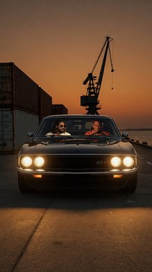 | 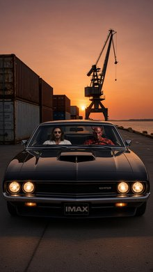 | 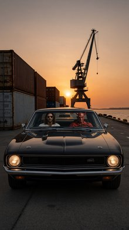 |
| 3271 | An 80s broadcast television still, Two Shot Front Medium Shot. In the kitchen environment from <IMAGE_0>, the werewolf man from <IMAGE_1> and the vampire man from <IMAGE_2> are positioned on opposite sides of the yellow laminate counter. The werewolf man from <IMAGE_1> is centered in the midground on the door side of the counter, facing screen-left and looking downward. He appears exactly once in the frame, retaining his exact appearance, gray fur, and open red flannel shirt over a dark gray tank top from <IMAGE_1>, and is holding a square cotton dish towel made of thick yellow waffle-weave fabric in both hands. The vampire man from <IMAGE_2> is positioned on the screen-left side of the frame in the midground on the equipment side of the counter, facing screen-right toward the werewolf man. He appears exactly once in the frame, retaining his exact appearance, pale skin, mustache, and oversized black velvet robe from <IMAGE_2>, and holds an ornate six-inch-tall tarnished pewter chalice loosely in his right hand. The yellow laminate kitchen counter runs between them, dividing the space. The scene features low-budget, flat three-point sitcom lighting with high intensity. Change image style to an 80s broadcast television still, with flat multi-camera studio lighting, vintage television broadcast, harsh and even lighting, no shadows, warm oversaturated color palette, chromatic aberration, analog film grain, and visible horizontal scan lines. | An 80s broadcast television still, captured as a two-shot front medium shot, set within the kitchen environment from <IMAGE_0>. The original white countertop has been replaced with a bright yellow laminate kitchen counter that runs horizontally between the subjects, dividing the space. On the right side of the frame, centered in the midground near the wooden door, stands the werewolf man from <IMAGE_1>. He retains his exact appearance, including his gray fur, wolf head, open red flannel shirt, and dark gray tank top. He is facing screen-left and looking downward, holding a square cotton dish towel made of thick yellow waffle-weave fabric in both of his clawed hands. On the left side of the frame, positioned near the sink, is the vampire man from <IMAGE_2>. He retains his exact appearance, including his pale skin, mustache, and oversized black velvet robe with a fur collar. He is facing screen-right toward the werewolf man and holds an ornate, six-inch-tall tarnished pewter chalice loosely in his right hand. The scene features low-budget, flat three-point sitcom lighting with high intensity. The overall visual style heavily mimics a vintage television broadcast, characterized by flat multi-camera studio lighting, harsh and even illumination with no shadows, a warm oversaturated color palette, chromatic aberration, analog film grain, and visible horizontal scan lines. | 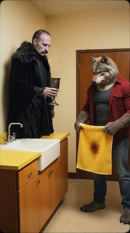 | 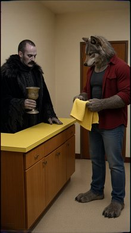 | 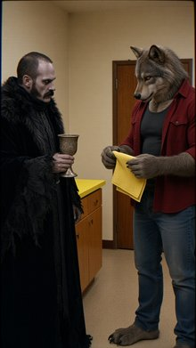 |
| 3270 | A Front Medium Close Up of a blonde woman from <IMAGE_1> and a pale man from <IMAGE_2> in the whimsical forest clearing from <IMAGE_0>. The blonde woman from <IMAGE_1> appears exactly once, centered in the foreground, looking directly into the lens with a bright smile. She holds a compact, modern digital vlog camera in her hand, framed as if vlogging. She retains her exact appearance and wardrobe from <IMAGE_1>, including her sky-blue cotton dress with a high collar and starched white apron. Behind her in the midground screen-right, the pale man from <IMAGE_2> is visible sitting at the cluttered wooden table from <IMAGE_0>, looking away. He appears exactly once, retaining his exact appearance, makeup, and wardrobe from <IMAGE_2>, including his dusty-olive velvet frock coat, checkered vest, and tall dark-green top hat. The background features the giant green forest leaves and twisted trees from <IMAGE_0>. The scene is illuminated by warm, saturated sunlight filtering through the dense canopy of trees from the upper screen-left direction, casting soft, dappled shadows. Captured in a 4K lifestyle vlog photograph style with a soft even frontal glow on the woman, extremely smooth processed skin, zero grain, and a warm, punchy, high-saturation color grade. | A front medium close-up lifestyle vlog photograph set in the whimsical forest clearing from <IMAGE_0>. Centered in the foreground is the blonde woman from <IMAGE_1>, appearing exactly once. She retains her exact appearance and wardrobe from <IMAGE_1>, including her long wavy blonde hair, sky-blue cotton dress with a high collar and puffed sleeves, starched white apron, and white tights. She is looking directly into the lens with a bright, joyful smile, holding a compact, modern digital vlog camera in her hand, framed as if she is actively recording a vlog. She is illuminated by a soft, even frontal glow that highlights her extremely smooth, processed skin. Behind her, in the midground on the screen-right, the pale man from <IMAGE_2> is visible sitting at the long wooden table from <IMAGE_0>. He appears exactly once, looking away from the camera towards the forest. He retains his exact appearance, makeup, and wardrobe from <IMAGE_2>, including his pale face with dark eye makeup and a red smile, messy reddish-brown hair, tall dark-green top hat with a folded bill tucked in the band, dusty-olive velvet frock coat, checkered vest, brown cravat, and striped trousers. The table he sits at features the same colorful patchwork tablecloth, teacups, and mismatched wooden chairs seen in <IMAGE_0>. The background is filled with the giant green tropical leaves, twisted mossy tree trunks, and dense foliage of the forest from <IMAGE_0>. The scene is illuminated by warm, saturated, golden sunlight filtering through the dense canopy of trees from the upper screen-left direction, casting soft, dappled shadows across the forest floor and the table. The image features a warm, punchy, high-saturation color grade, zero film grain, and a crisp, high-resolution 4K aesthetic. | 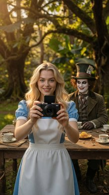 | 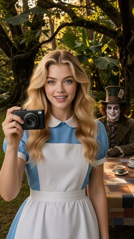 | 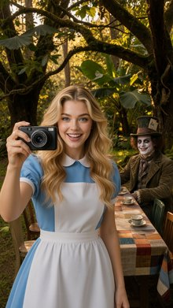 |
| 3269 | Right Close Up of the pale painted man from <IMAGE_1> seated at the long tea table from <IMAGE_0>. The pale painted man from <IMAGE_1> is positioned in the midground, centered in the frame. His body and head are turned slightly towards screen-left as he looks directly off-frame screen-left towards Alice from <IMAGE_2>, who is off-frame screen-left holding the camera. His empty hands rest flat on the cluttered wooden table before him. He has a wide, manic grin and retains his exact appearance and wardrobe from <IMAGE_1>, including his white makeup, red lips, oversized dusty-olive velvet frock coat, mismatched checkered vest, frayed silk cravat, and the tall dark-green top hat with a faded paper card tucked into the band. The background consists of the lush green forest leaves and twisted tree trunks of <IMAGE_0>. Warm, saturated afternoon sunlight filters through the dense canopy from the upper screen-left, casting soft, dappled shadows across the table and the pale painted man. The image has a 4K lifestyle vlog photograph style with a warm, punchy color grade, boosted saturation, and a soft even frontal glow on the subject's smoothed, beauty-processed skin. | A tight close-up, 4K lifestyle vlog photograph featuring the pale painted man from <IMAGE_1> seated at the long tea table from <IMAGE_0>. The man is positioned in the midground, centered in the frame, with his body and head turned slightly towards screen-left. He is looking directly off-frame screen-left, as if making eye contact with Alice from <IMAGE_2> who is holding the camera just out of view. He wears a wide, manic grin and retains his exact appearance and wardrobe from <IMAGE_1>, including his white face makeup, red lips, oversized dusty-olive velvet frock coat, mismatched checkered vest, frayed silk cravat, and the tall dark-green top hat with a faded paper card tucked into the band. His empty hands rest flat on the cluttered wooden table before him. The table in the foreground is covered with the colorful patchwork quilt tablecloth and scattered teacups and saucers seen in <IMAGE_0>. The background consists of the lush green forest leaves, twisted tree trunks, and mossy roots of <IMAGE_0>, softly blurred to emphasize the subject. Warm, saturated afternoon sunlight filters through the dense canopy from the upper screen-left, casting soft, dappled shadows across the table and the man. The image features a warm, punchy color grade with boosted saturation, while the subject's smoothed, beauty-processed skin is illuminated by a soft, even frontal glow characteristic of a vlog camera. | 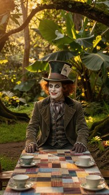 | 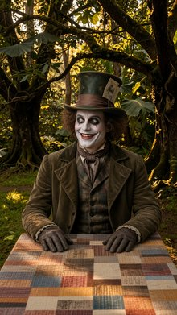 | 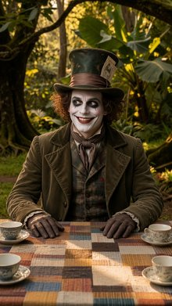 |
| 3268 | Front Close Up of the pale-skinned man with white makeup from <IMAGE_1>, as he leans far forward, his face filling the center of the frame in the whimsical forest clearing of <IMAGE_0>. The pale-skinned man from <IMAGE_1> appears exactly once, centered in the frame with his head and shoulders visible. He looks directly forward at the camera with wide, intense, unhinged eyes, his face in a manic expression. He retains his exact appearance from <IMAGE_1>, including his white face makeup, red lips, and dark-green top hat with a faded paper card in the band. Alice from <IMAGE_2> is off-frame screen-left holding the camera. The background shows the lush, colorful foliage and giant green forest leaves of <IMAGE_0>. The scene is illuminated by warm, saturated sunlight filtering through the dense canopy of trees from the upper screen-left direction, casting soft, dappled shadows across his face. 4K lifestyle vlog photograph, soft even frontal glow on subject, extremely smooth processed skin, zero grain, warm punchy color grade, boosted saturation, skin computationally smoothed, pores minimized, beauty-processed texture. | A 4K lifestyle vlog photograph featuring a front close-up of the pale-skinned man from <IMAGE_1>. He is leaning far forward, his face filling the center of the frame with his head and shoulders prominently visible. He looks directly into the lens with wide, intense, unhinged eyes and a manic expression. He retains his exact appearance from <IMAGE_1>, including his stark white face makeup, smeared red lips, messy curly hair, and his dark-green top hat with a faded paper card tucked into the band. The background is the lush, whimsical forest clearing from <IMAGE_0>, featuring the same giant green tropical leaves, mossy tree trunks, and colorful foliage, slightly blurred to create a shallow depth of field. Warm, saturated golden sunlight filters through the dense canopy from the upper left, casting soft, dappled shadows across his face. The image has a distinct vlog aesthetic with a soft, even frontal glow on the subject, extremely smooth processed skin with minimized pores, zero grain, and a warm, punchy color grade with boosted saturation. The blonde woman in the blue dress and white apron from <IMAGE_2> is completely off-frame to the screen-left, implied to be holding the camera to take this selfie-style vlog shot. | 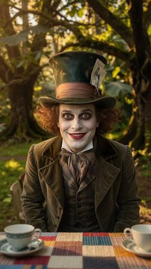 | 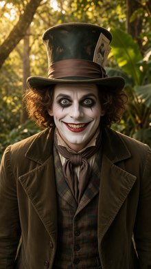 | 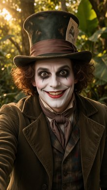 |
| 3267 | Front Medium Shot of the blond woman and the pale makeup man seated at the whimsical tea table from <IMAGE_0>. The blond woman from <IMAGE_1> is seated frame-left in the midground, holding a compact, modern digital vlog camera with a matte black plastic casing from <IMAGE_1>'s perspective as if filming. She is looking frame-right towards the man. She retains her exact appearance and wardrobe from <IMAGE_1>, including her classic sky-blue cotton dress and starched white apron. The pale makeup man from <IMAGE_2> is seated in the midground frame-right, facing frame-left towards the blond woman. He retains his exact appearance and wardrobe from <IMAGE_2>, including his dusty-olive velvet frock coat, checkered vest, and dark-green top hat. On the table between them, a tall ceramic teapot with turquoise and pink vertical stripes rests, while an empty pastel blue ceramic teacup with a scalloped rim and daisy pattern is placed in the foreground. The scene is set at the long wooden table with empty mismatched chairs from <IMAGE_0>, backed by lush, giant green leaves. The scene is illuminated by warm, saturated sunlight filtering through the dense canopy of trees from the upper screen-left direction, casting soft, dappled shadows across the table. 4k lifestyle vlog photograph. Soft even frontal glow on subject. Extremely smooth processed skin, zero grain. Warm punchy color grade, boosted saturation. Skin computationally smoothed, pores minimized, beauty-processed texture. | A front medium shot lifestyle vlog photograph set in the lush, sunlit forest environment from <IMAGE_0>. The scene centers on the long wooden table draped in the colorful patchwork tablecloth, surrounded by the same mismatched wooden chairs. Seated in the midground on the frame-left is the blonde woman from <IMAGE_1>, retaining her exact appearance, including her wavy blonde hair, classic sky-blue cotton dress with puffed sleeves, starched white apron, white knee-high socks, and black Mary Jane shoes. She is holding a compact, modern digital vlog camera with a matte black plastic casing up in front of her as if filming, and she is looking frame-right towards her companion. Seated opposite her in the midground frame-right is the pale-faced man from <IMAGE_2>, retaining his exact appearance and wardrobe, including his messy curly hair, white theatrical makeup with a wide red smile, dark-green top hat with a dollar bill tucked into the band, dusty-olive velvet frock coat, plaid vest, brown cravat, and striped trousers. He is facing frame-left, looking towards the woman. On the table between them sits a tall ceramic teapot with turquoise and pink vertical stripes. In the immediate foreground on the table rests an empty pastel blue ceramic teacup with a scalloped rim and a white daisy pattern. The background features the giant green leaves, massive tree trunks, and the dirt path from <IMAGE_0>. Warm, saturated golden sunlight filters through the dense canopy from the upper screen-left, casting soft, dappled shadows across the table and the subjects. The image features a soft even frontal glow on the subjects, a warm punchy color grade with boosted saturation, and extremely smooth, beauty-processed skin with minimized pores and zero grain. | 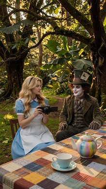 | 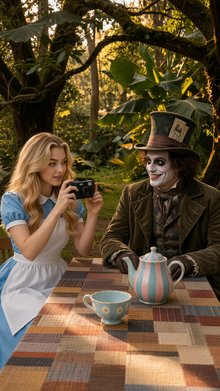 | 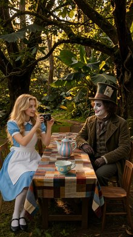 |
| 3266 | Front Medium Shot showing the woman in the blue dress from <IMAGE_1> and the man in the green top hat from <IMAGE_2> at the long, cluttered wooden table from <IMAGE_0>. Frame-left, the tall blond fair-skinned woman from <IMAGE_1> is standing, holding a compact, modern digital vlog camera with a matte black plastic casing and a forward-facing flip-out screen in her hands. She is looking frame-right towards the other character. She retains her exact appearance and wardrobe from <IMAGE_1>, including her sky-blue cotton dress with a high collar and clean white apron, and her body is visible from the waist up. Frame-right, the pale painted man with white makeup and red lips from <IMAGE_2> remains seated in the midground, looking towards her while retaining his exact appearance, including his dusty-olive velvet frock coat, checkered vest, and tall dark-green top hat with a paper card. The long wooden table diagonally spans the frame, surrounded by the overgrown forest clearing filled with twisting roots and colorful mossy foliage from <IMAGE_0>. The scene is illuminated by warm, saturated sunlight filtering through the dense canopy of trees from the upper screen-left direction, casting soft, dappled shadows across the table. Captured as a 4K lifestyle vlog photograph with a soft, even frontal glow, extremely smooth processed skin with zero grain, beauty-processed texture, and a warm, punchy color grade with boosted saturation. | A front medium shot capturing a vibrant scene set in the lush, sunlit forest clearing from <IMAGE_0>. The long wooden table, draped in its colorful patchwork quilt tablecloth and set with teacups and saucers, diagonally spans the frame, surrounded by the same massive, moss-covered tree roots and large green tropical leaves. On the left side of the frame, the tall, fair-skinned blonde woman from <IMAGE_1> is standing, visible from the waist up. She retains her exact appearance and wardrobe, wearing the sky-blue short-sleeved dress with a white Peter Pan collar and a clean white apron. She is holding a compact, modern digital vlog camera with a matte black plastic casing and a forward-facing flip-out screen in her hands, looking frame-right towards the other character. On the right side of the frame, the pale man with white face makeup, a wide red smile, and messy hair from <IMAGE_2> is seated in the midground at the table in one of the rustic wooden chairs. He retains his exact appearance, including his tall dark-green top hat with a paper card tucked into the band, dusty-olive velvet frock coat, checkered vest, and cravat, and is looking left towards the woman. The scene is illuminated by warm, saturated sunlight filtering through the dense canopy from the upper left, casting soft, dappled shadows across the table and the characters. The image is captured as a 4K lifestyle vlog photograph featuring a soft, even frontal glow on the subjects, extremely smooth processed skin with zero grain, a beauty-processed texture, and a warm, punchy color grade with boosted saturation. | 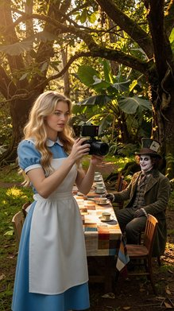 | 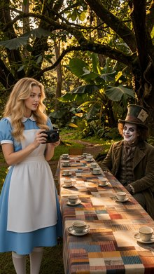 | xAI API error 400: {"code":"imagine:content-moderated","error":"Generated image rejected by content moderation.","usage":{"cost_in_usd_ticks":0}} |